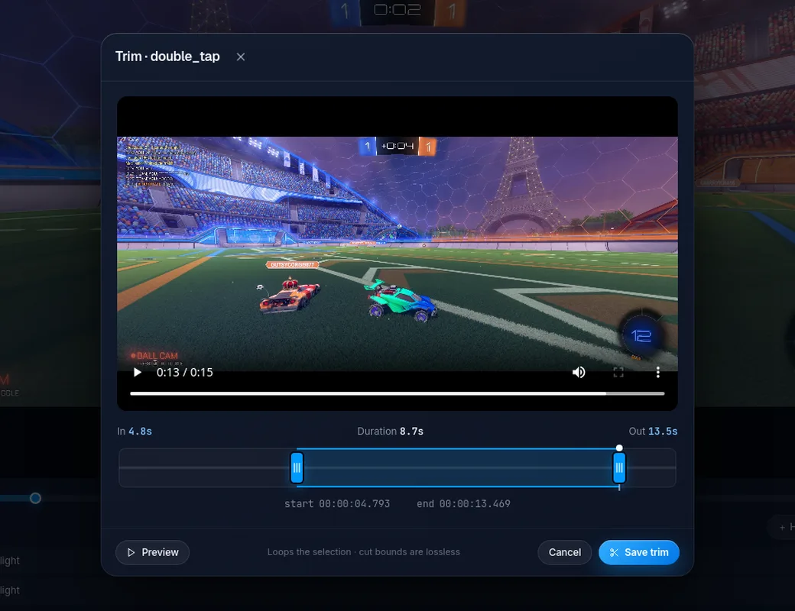
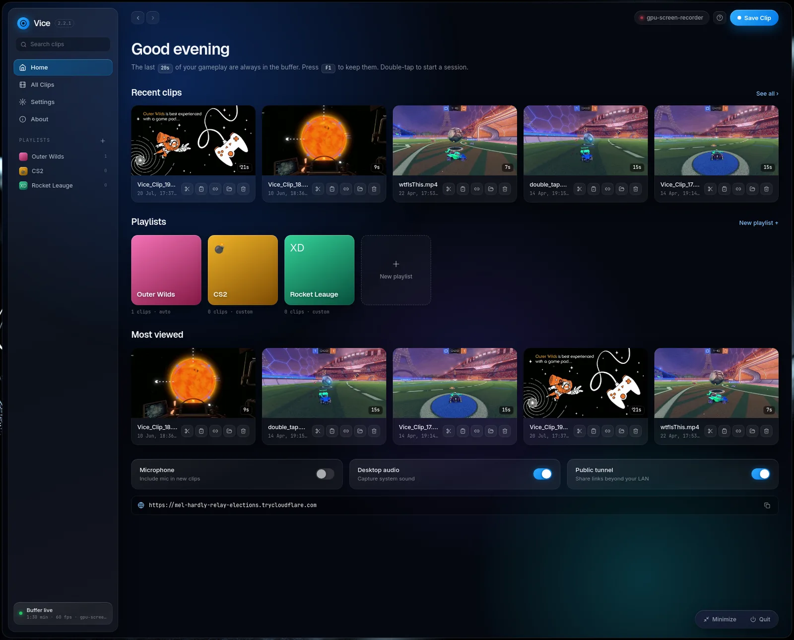
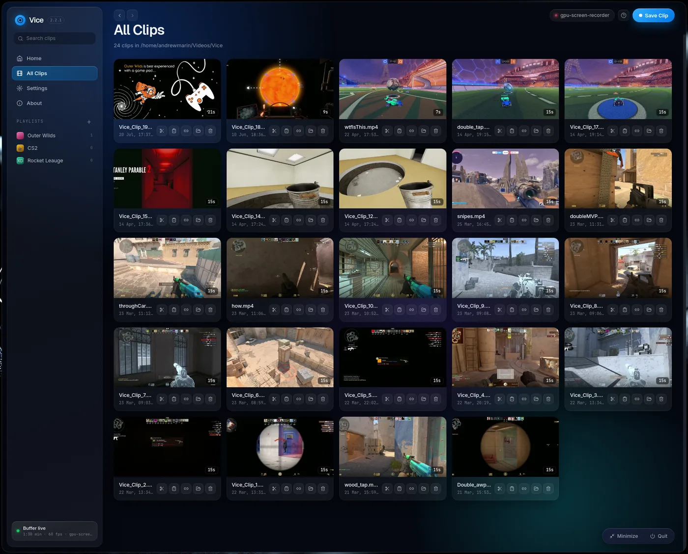
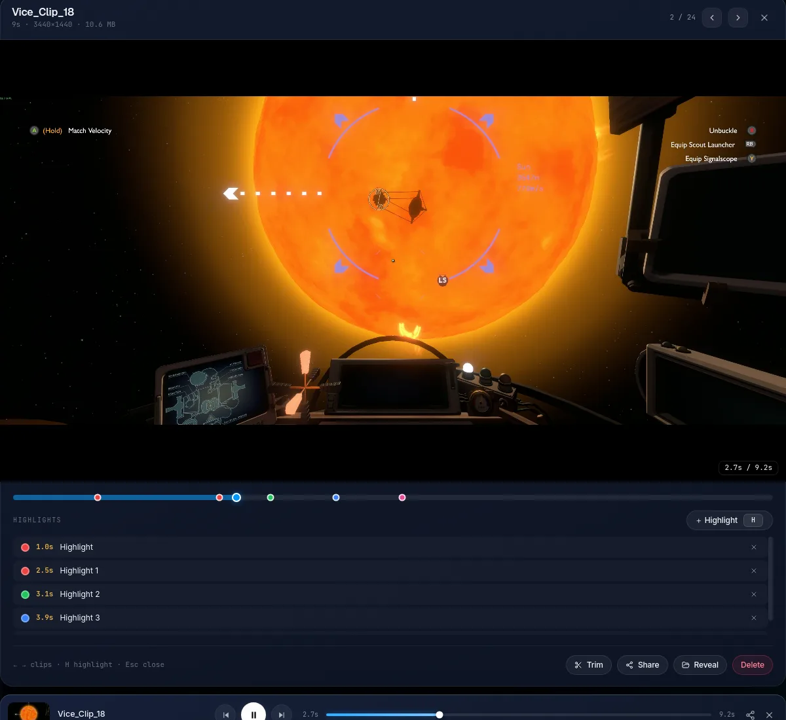

Open source · Linux native
Instant replay for Linux.
Press one key to save the last 15 seconds of gameplay. No scenes, no setup, no upload.
- Under 1% CPU while recording
- Works on every compositor and GPU
- Free forever, no account
Install in one line
Arch · Manjaro · CachyOS · EndeavourOS
Ubuntu · Debian · Mint · Fedora · openSUSE
Installs the capture backend and starts clipping at login. Then press F9 in a game. That is it.


How it works
From play to clip in one tap.
Always rolling
A two minute buffer runs silently at the driver level. Nothing touches your disk until you ask.
Press F9
The play happens, you tap one key. No alt-tab, no focus stealing, in any game on any compositor.
Already saved
The last 15 seconds land in your gallery before the round ends. Game-tagged and ready to share.
Features
Small app. Sharp details.
Sessions and highlights
Double-tap F9 to record a whole match. Tap once mid-game to drop a color-coded marker on the timeline.
Make it yours
Five accent colors, one electric default. The whole UI follows.

Game-tagged filenames
A curated game list names your clips. Nothing is guessed from window titles.
Separate audio tracks
Game, voice chat, and microphone each on their own track for the edit.
A real CLI
The daemon answers to the terminal too. Script it, bind it, systemd it.
Discord Rich Presence
Shows "Clipping <Game> with Vice" while a recognized game is focused. Off in one toggle.

Works everywhere you do.
Hotkeys are read from /dev/input via evdev, so the clip key works on every compositor with no keybind config.
Inside the app
A gallery that feels familiar.
Hover previews, in-place rename, share, and visual trim with lossless cut bounds.



Compare
OBS has a replay buffer. This is different.
OBS is a studio. Vice is a reflex.
Press F9. Keep the moment.
GPL-3.0 · Free forever · No account